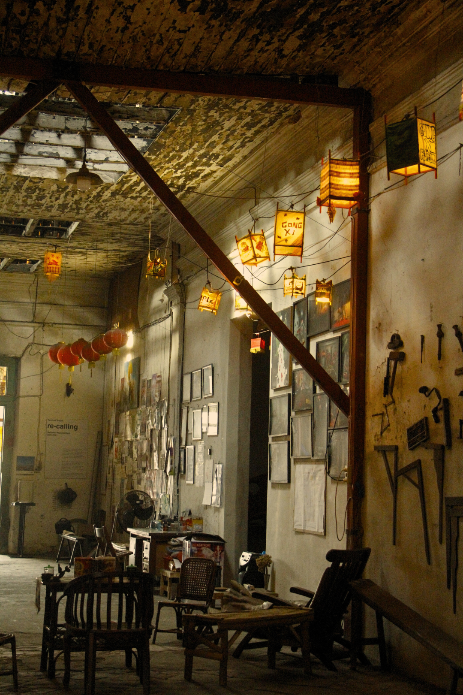

KOLEKSI MURAL TAMBAK BAYAN
Di sini, kamu bisa menjelajahi berbagai karya mural yang tidak hanya indah dilihat, tapi juga penuh dengan makna.
Yuk, pilih kategori yang kamu suka dan temukan cerita unik di balik setiap goresan seni!
Jelajah Cerita di Balik Mural Tambak Bayan